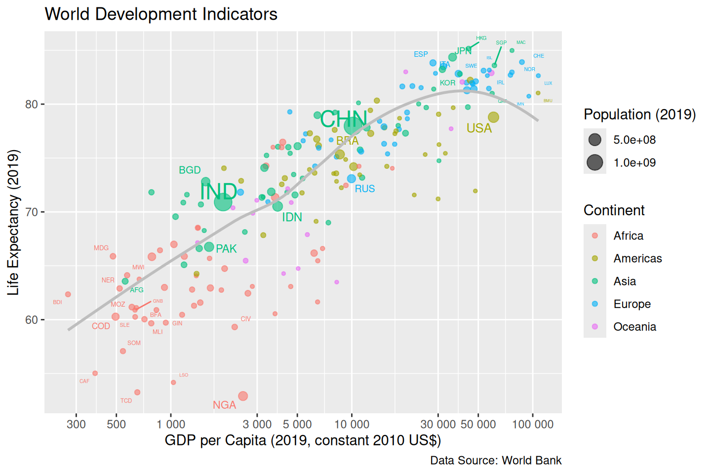

library(tidyverse)
library(readxl)
library(countrycode)
library(ggrepel)
library(ggplot2)
library(scales)
library(RColorBrewer)Lab 5
1 Introduction
2 Preparing the Data
2.1 Data Import
# Define file paths
gdp_path <- "API_NY.GDP.PCAP.KD_DS2_en_excel_v2_143214.xls"
life_expectancy_path <- "API_SP.DYN.LE00.IN_DS2_en_excel_v2_142982.xls"
population_path <- "API_SP.POP.TOTL_DS2_en_excel_v2_144629.xls"
# Import data from the "Data" sheet, skipping the first 3 rows
gdp_data <- read_excel(gdp_path, sheet = "Data", skip = 3) %>% as_tibble()
life_expectancy_data <- read_excel(life_expectancy_path, sheet = "Data", skip = 3) %>% as_tibble()
population_data <- read_excel(population_path, sheet = "Data", skip = 3) %>% as_tibble()
# Display the first few rows of each tibble
head(gdp_data)# A tibble: 6 × 68
`Country Name` `Country Code` `Indicator Name` `Indicator Code` `1960` `1961`
<chr> <chr> <chr> <chr> <dbl> <dbl>
1 Aruba ABW GDP per capita … NY.GDP.PCAP.KD NA NA
2 Africa Eastern… AFE GDP per capita … NY.GDP.PCAP.KD NA NA
3 Afghanistan AFG GDP per capita … NY.GDP.PCAP.KD NA NA
4 Africa Western… AFW GDP per capita … NY.GDP.PCAP.KD 1089. 1086.
5 Angola AGO GDP per capita … NY.GDP.PCAP.KD NA NA
6 Albania ALB GDP per capita … NY.GDP.PCAP.KD NA NA
# ℹ 62 more variables: `1962` <dbl>, `1963` <dbl>, `1964` <dbl>, `1965` <dbl>,
# `1966` <dbl>, `1967` <dbl>, `1968` <dbl>, `1969` <dbl>, `1970` <dbl>,
# `1971` <dbl>, `1972` <dbl>, `1973` <dbl>, `1974` <dbl>, `1975` <dbl>,
# `1976` <dbl>, `1977` <dbl>, `1978` <dbl>, `1979` <dbl>, `1980` <dbl>,
# `1981` <dbl>, `1982` <dbl>, `1983` <dbl>, `1984` <dbl>, `1985` <dbl>,
# `1986` <dbl>, `1987` <dbl>, `1988` <dbl>, `1989` <dbl>, `1990` <dbl>,
# `1991` <dbl>, `1992` <dbl>, `1993` <dbl>, `1994` <dbl>, `1995` <dbl>, …head(life_expectancy_data)# A tibble: 6 × 68
`Country Name` `Country Code` `Indicator Name` `Indicator Code` `1960` `1961`
<chr> <chr> <chr> <chr> <dbl> <dbl>
1 Aruba ABW Life expectancy… SP.DYN.LE00.IN 64.2 64.5
2 Africa Eastern… AFE Life expectancy… SP.DYN.LE00.IN 44.1 44.4
3 Afghanistan AFG Life expectancy… SP.DYN.LE00.IN 32.5 33.1
4 Africa Western… AFW Life expectancy… SP.DYN.LE00.IN 37.8 38.2
5 Angola AGO Life expectancy… SP.DYN.LE00.IN 38.2 37.3
6 Albania ALB Life expectancy… SP.DYN.LE00.IN 54.4 55.6
# ℹ 62 more variables: `1962` <dbl>, `1963` <dbl>, `1964` <dbl>, `1965` <dbl>,
# `1966` <dbl>, `1967` <dbl>, `1968` <dbl>, `1969` <dbl>, `1970` <dbl>,
# `1971` <dbl>, `1972` <dbl>, `1973` <dbl>, `1974` <dbl>, `1975` <dbl>,
# `1976` <dbl>, `1977` <dbl>, `1978` <dbl>, `1979` <dbl>, `1980` <dbl>,
# `1981` <dbl>, `1982` <dbl>, `1983` <dbl>, `1984` <dbl>, `1985` <dbl>,
# `1986` <dbl>, `1987` <dbl>, `1988` <dbl>, `1989` <dbl>, `1990` <dbl>,
# `1991` <dbl>, `1992` <dbl>, `1993` <dbl>, `1994` <dbl>, `1995` <dbl>, …head(population_data)# A tibble: 6 × 68
`Country Name` `Country Code` `Indicator Name` `Indicator Code` `1960` `1961`
<chr> <chr> <chr> <chr> <dbl> <dbl>
1 Aruba ABW Population, tot… SP.POP.TOTL 5.46e4 5.58e4
2 Africa Eastern… AFE Population, tot… SP.POP.TOTL 1.31e8 1.34e8
3 Afghanistan AFG Population, tot… SP.POP.TOTL 8.62e6 8.79e6
4 Africa Western… AFW Population, tot… SP.POP.TOTL 9.73e7 9.93e7
5 Angola AGO Population, tot… SP.POP.TOTL 5.36e6 5.44e6
6 Albania ALB Population, tot… SP.POP.TOTL 1.61e6 1.66e6
# ℹ 62 more variables: `1962` <dbl>, `1963` <dbl>, `1964` <dbl>, `1965` <dbl>,
# `1966` <dbl>, `1967` <dbl>, `1968` <dbl>, `1969` <dbl>, `1970` <dbl>,
# `1971` <dbl>, `1972` <dbl>, `1973` <dbl>, `1974` <dbl>, `1975` <dbl>,
# `1976` <dbl>, `1977` <dbl>, `1978` <dbl>, `1979` <dbl>, `1980` <dbl>,
# `1981` <dbl>, `1982` <dbl>, `1983` <dbl>, `1984` <dbl>, `1985` <dbl>,
# `1986` <dbl>, `1987` <dbl>, `1988` <dbl>, `1989` <dbl>, `1990` <dbl>,
# `1991` <dbl>, `1992` <dbl>, `1993` <dbl>, `1994` <dbl>, `1995` <dbl>, …2.2 Column Selection
For each tibble, retain only three columns:
country: Data from the Excel columns titled “Country Name.”code: Data from the Excel columns titled “Country Code.”- Either
gdp_per_cap,life_exporpop: Data for 2019 only.
gdp_data <- gdp_data |>
select(country = `Country Name`, code = `Country Code`, gdp_per_cap = `2019`)
life_expectancy_data <- life_expectancy_data |>
select(country = `Country Name`, code = `Country Code`, life_exp = `2019`)
population_data <- population_data |>
select(country = `Country Name`, code = `Country Code`, pop = `2019`)
# Display the first few rows of each tibble
head(gdp_data)# A tibble: 6 × 3
country code gdp_per_cap
<chr> <chr> <dbl>
1 Aruba ABW 30318.
2 Africa Eastern and Southern AFE 1483.
3 Afghanistan AFG 559.
4 Africa Western and Central AFW 1841.
5 Angola AGO 2666.
6 Albania ALB 4543.head(life_expectancy_data)# A tibble: 6 × 3
country code life_exp
<chr> <chr> <dbl>
1 Aruba ABW 76.2
2 Africa Eastern and Southern AFE 63.8
3 Afghanistan AFG 63.6
4 Africa Western and Central AFW 57.6
5 Angola AGO 62.4
6 Albania ALB 79.3head(population_data)# A tibble: 6 × 3
country code pop
<chr> <chr> <dbl>
1 Aruba ABW 106442
2 Africa Eastern and Southern AFE 667242986
3 Afghanistan AFG 37769499
4 Africa Western and Central AFW 454306063
5 Angola AGO 32353588
6 Albania ALB 28541912.3 Merge Data
Use left_join() to merge the three spreadsheets into a single tibble named countries containing five columns: country, code, gdp_per_cap, life_exp, and pop.
# Merge the three tibbles into a single tibble
countries <- gdp_data |>
left_join(life_expectancy_data, by = c("country", "code")) |>
left_join(population_data, by = c("country", "code"))
# Display the first few rows of the merged tibble
head(countries)# A tibble: 6 × 5
country code gdp_per_cap life_exp pop
<chr> <chr> <dbl> <dbl> <dbl>
1 Aruba ABW 30318. 76.2 106442
2 Africa Eastern and Southern AFE 1483. 63.8 667242986
3 Afghanistan AFG 559. 63.6 37769499
4 Africa Western and Central AFW 1841. 57.6 454306063
5 Angola AGO 2666. 62.4 32353588
6 Albania ALB 4543. 79.3 28541912.4 Identify Non-Country Rows
Some rows in the World Bank spreadsheets represent regions rather than individual countries, such as “East Asia & Pacific (excluding high income).” To exclude these rows from the countries tibble, we will use the countrycode() function from the countrycode package. This function allows us to convert country names and country codes from one format to another (e.g., from the English name to standardized ISO 3166-1 numeric codes). A useful feature of countrycode() is that it returns a non-missing value only if the three-letter World Bank code belongs to a single country, for example:
test <- tibble(
country = c("Slovak Republic", "Arab World", "Norway"),
code = c("SVK", "ARB", "NOR")
)
mutate(
test,
code_2 = countrycode(code, origin = "wb", destination = "wb")
)Warning: There was 1 warning in `mutate()`.
ℹ In argument: `code_2 = countrycode(code, origin = "wb", destination = "wb")`.
Caused by warning:
! Some values were not matched unambiguously: ARB# A tibble: 3 × 3
country code code_2
<chr> <chr> <chr>
1 Slovak Republic SVK SVK
2 Arab World ARB <NA>
3 Norway NOR NOR # Identify non-country rows
countries <- countries |>
mutate(
code_2 = countrycode(code, origin = "wb", destination = "wb")
) |>
filter(!is.na(code_2))Warning: There was 1 warning in `mutate()`.
ℹ In argument: `code_2 = countrycode(code, origin = "wb", destination = "wb")`.
Caused by warning:
! Some values were not matched unambiguously: AFE, AFW, ARB, CEB, CSS, EAP, EAR, EAS, ECA, ECS, EMU, EUU, FCS, HIC, HPC, IBD, IBT, IDA, IDB, IDX, INX, LAC, LCN, LDC, LIC, LMC, LMY, LTE, MEA, MIC, MNA, NAC, OED, OSS, PRE, PSS, PST, SAS, SSA, SSF, SST, TEA, TEC, TLA, TMN, TSA, TSS, UMC, WLD# Display the first few rows of the filtered tibble
head(countries)# A tibble: 6 × 6
country code gdp_per_cap life_exp pop code_2
<chr> <chr> <dbl> <dbl> <dbl> <chr>
1 Aruba ABW 30318. 76.2 106442 ABW
2 Afghanistan AFG 559. 63.6 37769499 AFG
3 Angola AGO 2666. 62.4 32353588 AGO
4 Albania ALB 4543. 79.3 2854191 ALB
5 Andorra AND 39414. NA 76343 AND
6 United Arab Emirates ARE 43785. 79.7 9211657 ARE 2.5 Append Continent Column
Use countrycode() to append a colummn containing the continent of each country.
# Append a column containing the continent of each country
countries <- countries |>
mutate(
continent = countrycode(code, origin = "wb", destination = "continent")
)Warning: There was 1 warning in `mutate()`.
ℹ In argument: `continent = countrycode(code, origin = "wb", destination =
"continent")`.
Caused by warning:
! Some values were not matched unambiguously: CHI, XKX# Display the first few rows of the tibble
head(countries)# A tibble: 6 × 7
country code gdp_per_cap life_exp pop code_2 continent
<chr> <chr> <dbl> <dbl> <dbl> <chr> <chr>
1 Aruba ABW 30318. 76.2 106442 ABW Americas
2 Afghanistan AFG 559. 63.6 37769499 AFG Asia
3 Angola AGO 2666. 62.4 32353588 AGO Africa
4 Albania ALB 4543. 79.3 2854191 ALB Europe
5 Andorra AND 39414. NA 76343 AND Europe
6 United Arab Emirates ARE 43785. 79.7 9211657 ARE Asia 2.6 Remove Missing Data
Remove all rows from the countries tibble that contain any missing values to prevent ggplot2 from triggering a warning in subsequent tasks.
# Remove rows with missing values
countries <- countries |>
drop_na()
# Display the first few rows of the tibble
head(countries)# A tibble: 6 × 7
country code gdp_per_cap life_exp pop code_2 continent
<chr> <chr> <dbl> <dbl> <dbl> <chr> <chr>
1 Aruba ABW 30318. 76.2 106442 ABW Americas
2 Afghanistan AFG 559. 63.6 37769499 AFG Asia
3 Angola AGO 2666. 62.4 32353588 AGO Africa
4 Albania ALB 4543. 79.3 2854191 ALB Europe
5 United Arab Emirates ARE 43785. 79.7 9211657 ARE Asia
6 Argentina ARG 12716. 77.3 44938712 ARG Americas 2.7 Count Countries
How many countries are remaining in the countries tibble?
# Count the number of countries
countries |>
count()# A tibble: 1 × 1
n
<int>
1 1982.8 Prepare Country Labels
A subsequent task requires you to add country names as labels to the plot. To prepare for this task, add a label column to the data containing the three-letter codes of the following countries:
- The 10 countries with the highest GDP.
- The 10 countries with the lowest GDP.
- The 10 countries with the longest life expectancy.
- The 10 countries with the shortest life expectancy.
- The 10 most populous countries.
Please note that some countries may be included in multiple categories. For all other countries, the label should be an empty string.
# Prepare country labels
countries <- countries |>
mutate(
label = case_when(
# Highest GDP
rank(desc(gdp_per_cap)) <= 10 ~ code,
# Lowest GDP
rank(gdp_per_cap) <= 10 ~ code,
# Longest life expectancy
rank(life_exp) <= 10 ~ code,
# Shortest life expectancy
rank(desc(life_exp)) <= 10 ~ code,
# Most populous
rank(desc(pop)) <= 10 ~ code,
# other countries
TRUE ~ ""
)
)
# Display the first few rows of the tibble
head(countries) # A tibble: 6 × 8
country code gdp_per_cap life_exp pop code_2 continent label
<chr> <chr> <dbl> <dbl> <dbl> <chr> <chr> <chr>
1 Aruba ABW 30318. 76.2 1.06e5 ABW Americas ""
2 Afghanistan AFG 559. 63.6 3.78e7 AFG Asia "AFG"
3 Angola AGO 2666. 62.4 3.24e7 AGO Africa ""
4 Albania ALB 4543. 79.3 2.85e6 ALB Europe ""
5 United Arab Emirates ARE 43785. 79.7 9.21e6 ARE Asia ""
6 Argentina ARG 12716. 77.3 4.49e7 ARG Americas "" 3 Visualising the data
3.1 Set Up Basic Plot
As an initial step towards creating a plot similar to Figure 1.2, create a basic plot by using ggplot() and a geom_*() function to display one bubble per country. Choose suitable aesthetics for the plot and make the bubbles semi-transparent, which is an improvement compared to Gapminder’s approach.
# Set up a basic plot
p <- ggplot(countries, aes(x = gdp_per_cap, y = life_exp, size = pop, color = continent)) +
geom_point(alpha = 0.6) # Semi-transparent bubbles
# Display the plot
p3.2 Add Labels
Use geom_text_repel() to add the labels from the label column of the countries tibble. Set the show.legend argument equal to FALSE to exclude the text layer from the legends.
# Add labels to the plot
p <- p +
geom_text_repel(
aes(label = label),
show.legend = FALSE
)
# Display the plot
pWarning: ggrepel: 11 unlabeled data points (too many overlaps). Consider
increasing max.overlaps3.3 Add Trend Curve
Use geom_smooth() to fit a single LOESS curve to all data points in the plot. Set the countries’ population as the weighting variable for the curve. Choose a neutral color for the curve to indicate that it is not specific to any continent.
# Add a trend curve to the plot
p <- p +
geom_smooth(
method = "loess",
se = FALSE,
color = "gray",
size = 1,
aes(weight = pop)
)Warning: Using `size` aesthetic for lines was deprecated in ggplot2 3.4.0.
ℹ Please use `linewidth` instead.# Display the plot
p`geom_smooth()` using formula = 'y ~ x'Warning: ggrepel: 11 unlabeled data points (too many overlaps). Consider
increasing max.overlaps3.4 Add Annotations
Provide meaningful axis labels, legend labels and a title for the plot. Additionally, include a caption that credits the World Bank as the data source.
# Add annotations to the plot
p <- p +
labs(
x = "GDP per Capita (2019, constant 2010 US$)",
y = "Life Expectancy (2019)",
size = "Population (2019)",
color = "Continent",
title = "World Development Indicators",
caption = "Data Source: World Bank"
)
# Display the plot
p`geom_smooth()` using formula = 'y ~ x'Warning: ggrepel: 12 unlabeled data points (too many overlaps). Consider
increasing max.overlaps3.5 Change x-Axis Scale
Change the x-coordinates to a logarithmic scale in the plot. Adjust the breaks and minor breaks of the logarithmic scale as shown in figure Figure 1.3 using the breaks_log() functions from the scales package. Customize the tick mark labels to be more reader-friendly, such as displaying “$1,000” instead of the default “1e+03” format.
# Change the x-axis scale to a logarithmic scale
p <- p +
scale_x_log10(
breaks = breaks_log(n = 10),
labels = scales::label_number(scale = 1, suffix = "")
)
# Display the plot
p`geom_smooth()` using formula = 'y ~ x'
3.6 Change Size Scale
Use scale_size_area() to adjust the legend so that the areas of the bubbles represent populations of 1 million, 10 million, 100 million and 1 billion. Modify the labels in the legend from “1e+06”, “1e+07”, “1e+08”, and “1e+09” to more reader-friendly strings like “1M”, “10M”, “100M”, and “1B”. Increase the max_size argument to ensure that the bubble areas are approximately the same as in the Gapminder figure.
# Change the size scale of the plot
p <- p +
scale_size_area(
breaks = c(1e6, 1e7, 1e8, 1e9),
labels = c("1M", "10M", "100M", "1B"),
max_size = 20
)
# Display the plot
p`geom_smooth()` using formula = 'y ~ x'Warning: ggrepel: 6 unlabeled data points (too many overlaps). Consider
increasing max.overlaps3.7 Change Color Scale
Change the color scale to the ColorBrewer palette “Set1,” which provides clearer contrasts than ggplot2’s default colors. Note that these colors are not the same as those in the Gapminder figure.
# Change the color scale of the plot
p <- p +
scale_color_brewer(palette = "Set1")
# Display the plot
p`geom_smooth()` using formula = 'y ~ x'Warning: ggrepel: 6 unlabeled data points (too many overlaps). Consider
increasing max.overlaps3.8 Override Transparency in Legend
Semi-transparent colors are effective for addressing overplotting in the bubble plot. However, they are not ideal for the legend, where we want clear color contrasts. Override the alpha aesthetic in the legend to remove transparency. Additionally, increase the sizes of the circles in the color legend to enhance readability. You can refer to section 11.3.6 in Wickham, Navarro and Pedersen (2021) for related examples.
# Override transparency in the legend
p <- p +
guides(
color = guide_legend(override.aes = list(alpha = 1, size = 5))
)
# Display the plot
p`geom_smooth()` using formula = 'y ~ x'Warning: ggrepel: 6 unlabeled data points (too many overlaps). Consider
increasing max.overlaps3.9 Choose a ggplot2 Theme
Choose a ggplot2 theme and provide arguments to support your choice. There is no definitive right or wrong answer in this case, but you should clearly express your reasoning.
# Choose a ggplot2 theme
p <- p +
theme_minimal()
# Display the plot
p`geom_smooth()` using formula = 'y ~ x'Warning: ggrepel: 6 unlabeled data points (too many overlaps). Consider
increasing max.overlaps
theme_minimal() was chosen because it provides a clean and simple background that does not distract from the data. The white background and light gray gridlines make the plot easy to read, while the default font size and color are suitable for the plot. The minimal theme is a good choice for this plot because it emphasizes the data without adding unnecessary elements.
3.10 Reason About the Data
Write at least four sentences about the data. What does the plot reveal about the data? If you refer to specific countries, make sure to add the corresponding labels in the plot if necessary.
Answer:
The provided scatter plot elucidates World Development Indicators for various countries in 2019, with a specific focus on GDP per capita (measured in constant 2010 US$) and life expectancy. The size of each bubble is proportional to the population size, while the color coding represents different continents. The data reveals a positive correlation between GDP per capita and life expectancy; countries with higher GDP per capita tend to exhibit higher life expectancies. Notable examples include Japan (JPN) and the United States (USA), both of which display high GDP per capita and life expectancy. Conversely, countries such as Nigeria (NGA) and the Democratic Republic of Congo (COD) are characterized by low GDP per capita and life expectancy. Furthermore, there is a discernible disparity among continents, with African nations predominantly situated in the lower spectrum of both GDP per capita and life expectancy, in stark contrast to their European and Asian counterparts. This visual representation underscores the significant economic and health inequalities that exist on a global scale.